1.Izracunaj struju koju daje izvor,padove napona i snagu na svakom od trošila
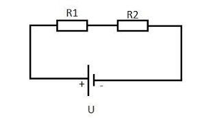2.Izracunaj vrijednost otpornika R1,struje I2 i napona izvora.
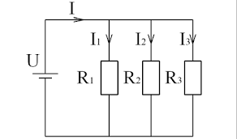3.Izracunaj sve struju koju pokazuje ampermatar
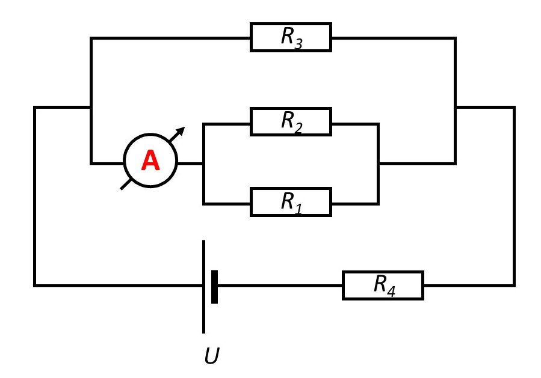4.Izracunaj struju izvora ako su zadani otpor R, induktivitet L i kapacitiet C

5. Tri kondezatora spojeni su serijski i priključeni na napon U. Odredite kapacitiet spoja C, ukupnu kolicinu naboja Q, napone na kodezatorima U1,U2,U3
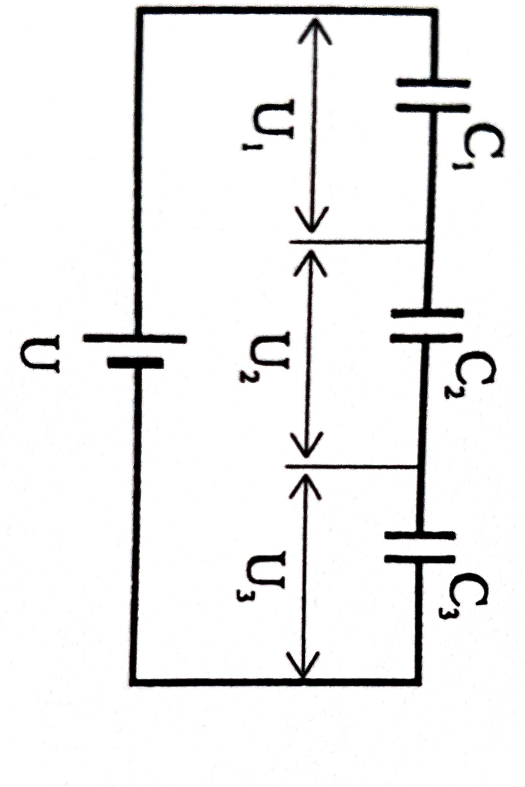6.Trosilo snage P1,otpora R1 spojeno je u paralelu s drugim trošilom otpora R2.Struja izvora je I. Izracunajte iznos otpora R1 i napon izvora U .
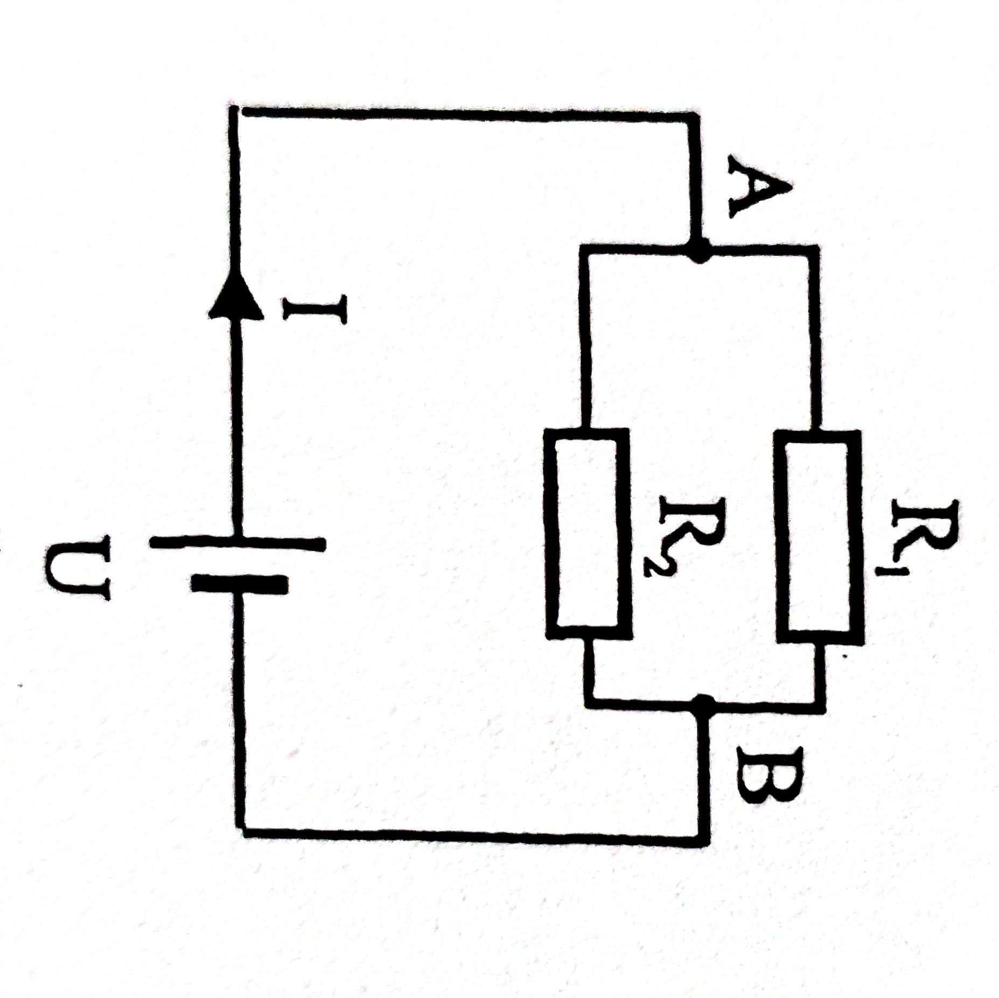7.Otpori od R1 do R6 su spojeni prema slici uz napon izvora U.Odredite iznose struja u svim granama.
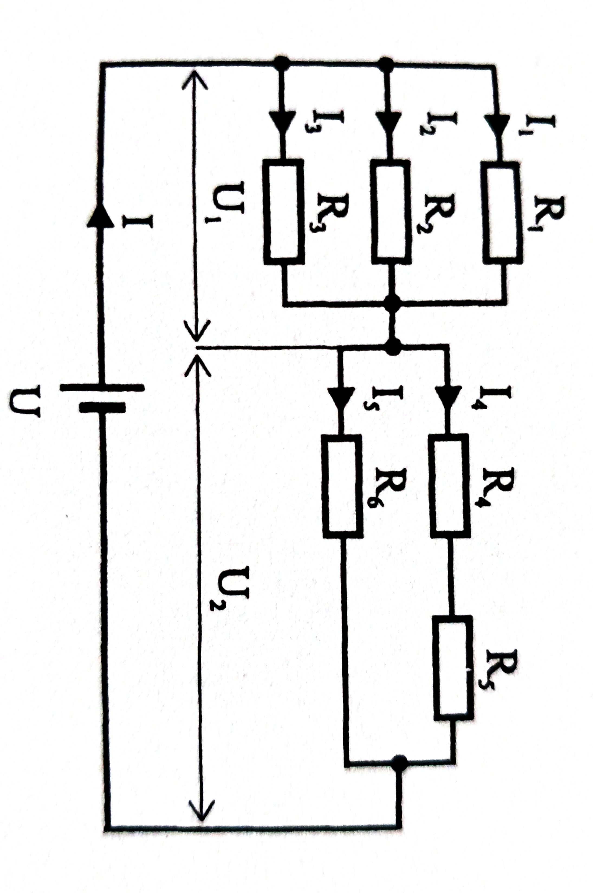8.Otpori R1,R2,R3,R4 spojeni su kao na slici .Odredite ukupni otpor spoja
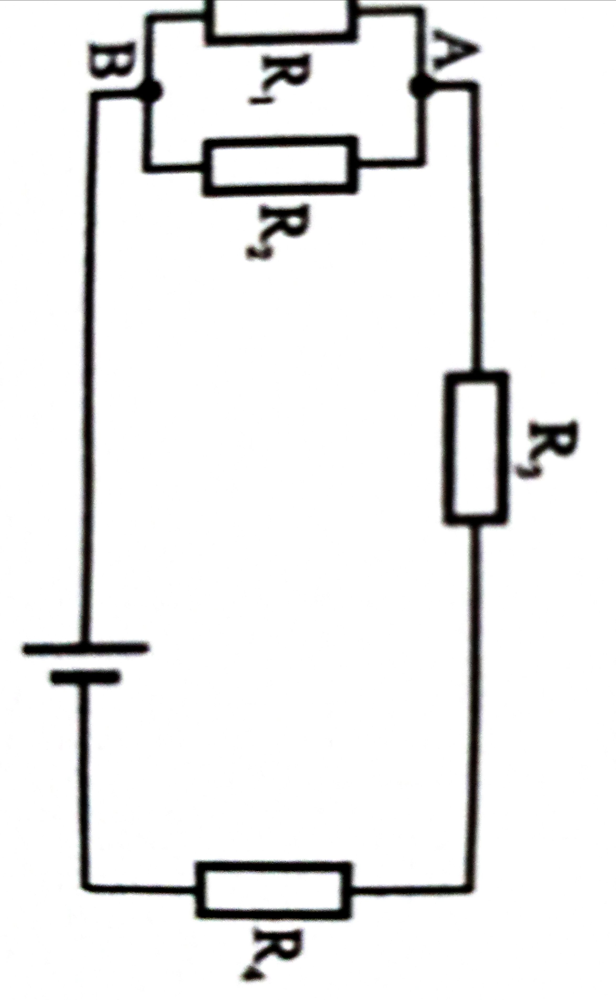9.Spoj poznatih otpornika od R1 do R8 prikazan je na shemi. Odredite ukupni optor R
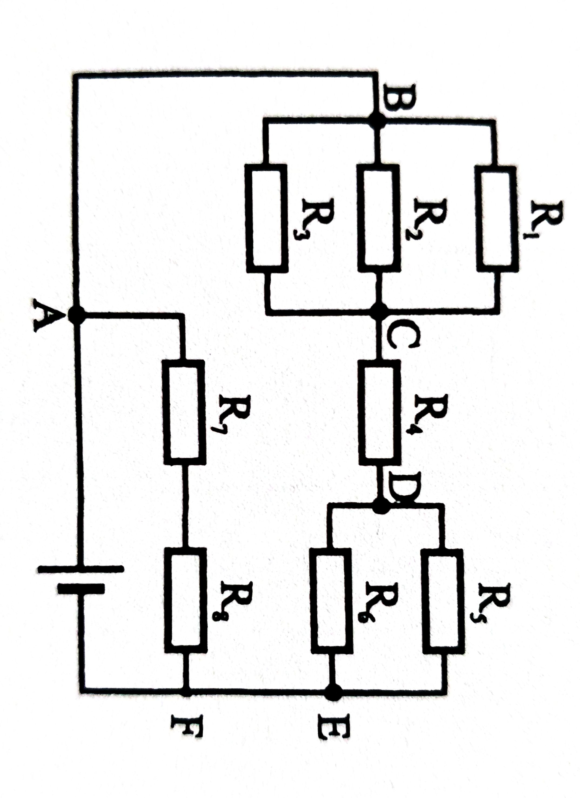10.Cetiri otpornika spojena su prema shemi uz zadani napon izvora U. Odredite snage na svakom od otpornika
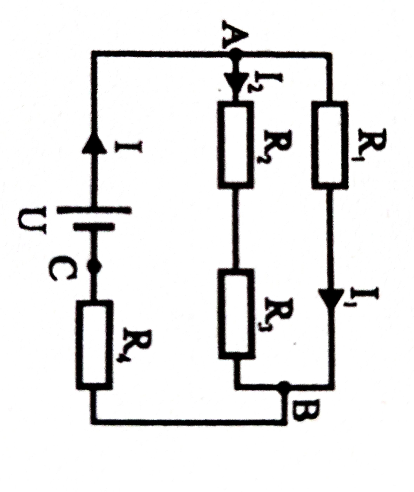11.Dva trošila spojena su u seriju pri naponu izvora U odredi otpor trošila R2 i struju izvora uz poznatu sangu P2
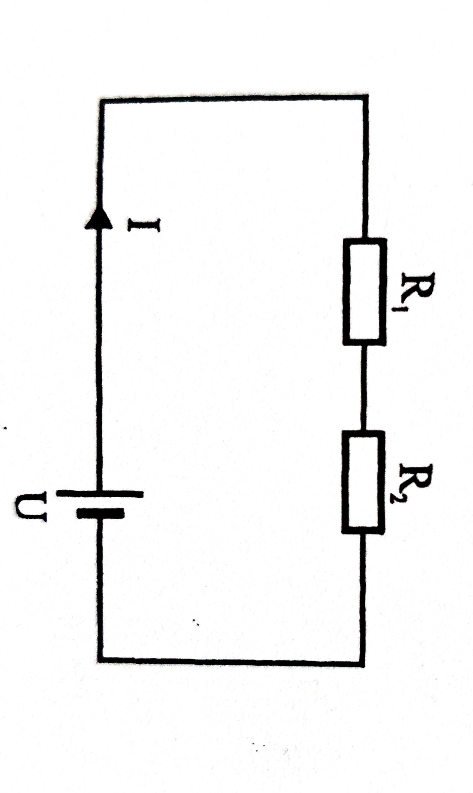12.Dva grijača s otporima R1 i R2 spojena su na elektricni izvor aluminskim vodovima duljine 653,4 prijesjeka vodica 25 mm2.Mjeranja su pokazala da je vrijednost unutarnjeg napona izovra 0.8 Ohma te da je sturja spoja 50 A. Odredite napon na trošilu, gubitak napona na spojnim vodou, elektromotornu silu izvora,razvijenu snagu na otporima.
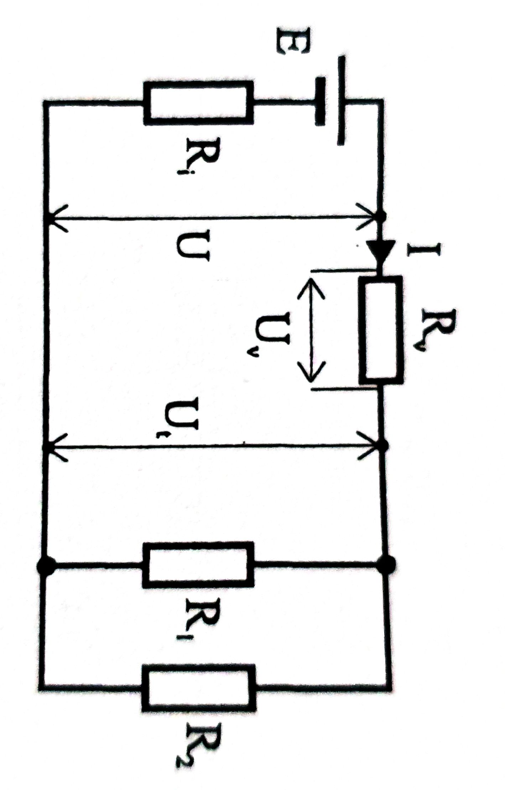13.Tri kondeztaoea spojena su paralelno i priključeni na napon izovra U. Odredite: kapacitiet spoja, kolicinu naboja na svakom od kondezatora i nagomilane energije u kondezatorima
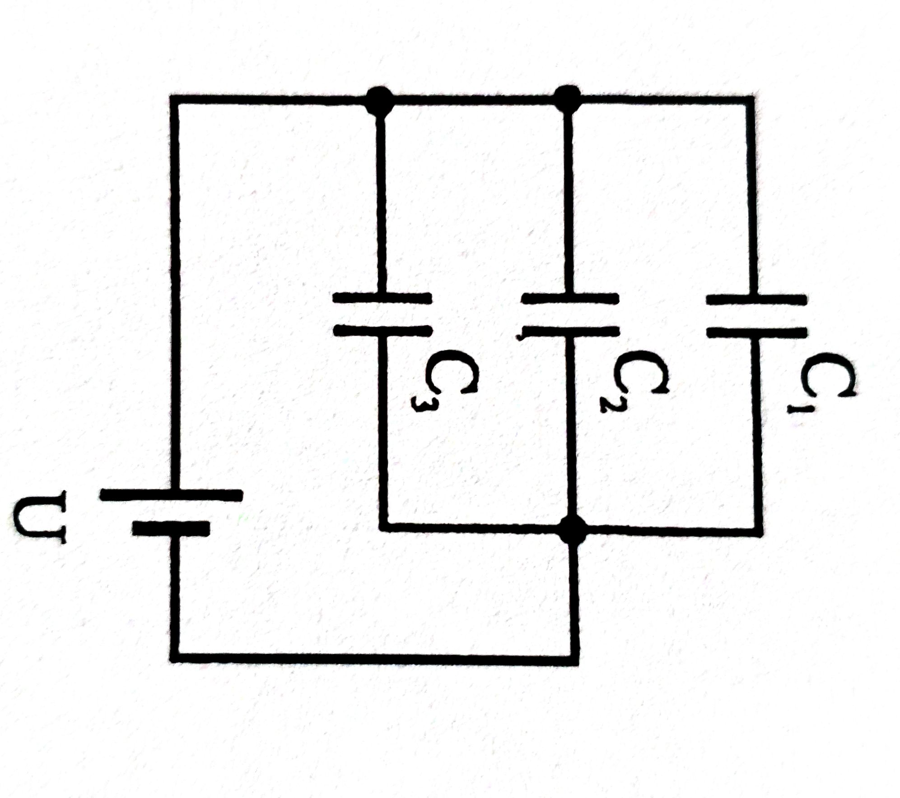